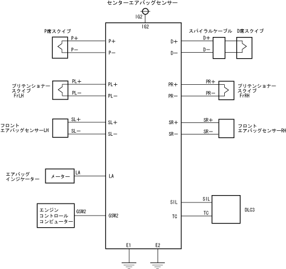

| Center airbag sensor (computer) |
| ● |
The center airbag sensor assembly is composed of G sensors, ignition judgment circuits, backup power supply, etc.
|
| ● |
The G sensor has adopted a semiconductor G sensor that has a linear output characteristics for the deceleration.
|
| ● |
The driver's seat, the passenger seat airbag, and the pliten shoner ignition judgment will be performed by the signal from the front airbag sensor and the G sensor.In addition, we have a diagnostic diagnosis in the event of an abnormal system with a diagnostic function.
|
|  |
 Configuration parts list Configuration parts list
|
 Activation judgment Activation judgment
|

| Operation of diagnostic circuit
|

| Primary check
|
| Always check
|
| Diagnostic function
|